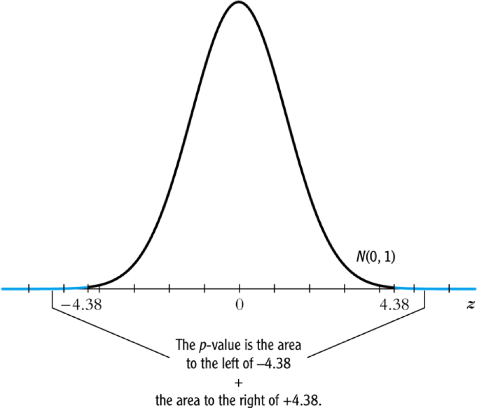

Created: 2017-03-27 Mon 16:52
\[ H_0: \beta_1 = \beta_{1,0}, H_1: \beta_1 \neq \beta_{1,0} \]
The general form of the t-statistic is
The t-statistics for testing \(\beta_1\) is
where
The p-value is the probability of observing a value of \(\hat{\beta}_1\) at least as different from \(\beta_{1,0}\) as the estimate actually computed (\(\hat{\beta}^{act}_1\)), assuming that the null hypothesis is correct.

Figure 1: Calculating the p-value of a two-sided test when \(t^{act}=-4.38\)
For such a test, we can set up the null hypothesis and the one-sided alternative hypothesis as
\[ H_0: \beta_1 = \beta_{1,0} \text{ vs. } H_1: \beta_1 < \beta_{1,0} \]